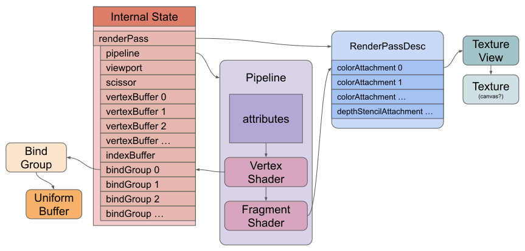

El artículo anterior trató sobre las variables de etapa intermedia (inter-stage variables). Este artículo tratará sobre los uniforms.
Los uniforms son algo así como variables globales para tu shader. Puedes establecer sus valores antes de ejecutar el shader y tendrán esos valores para cada iteración del shader. Puedes establecerlos con un valor diferente la próxima vez que le pidas a la GPU que ejecute el shader.
Empezaremos de nuevo con el ejemplo del triángulo del primer artículo y lo modificaremos para usar algunos uniforms.
const module = device.createShaderModule({
label: 'triangle shaders with uniforms',
code: /* wgsl */ `
+ struct OurStruct {
+ color: vec4f,
+ scale: vec2f,
+ offset: vec2f,
+ };
+
+ @group(0) @binding(0) var<uniform> ourStruct: OurStruct;
@vertex fn vs(
@builtin(vertex_index) vertexIndex : u32
) -> @builtin(position) vec4f {
let pos = array(
vec2f( 0.0, 0.5), // top center
vec2f(-0.5, -0.5), // bottom left
vec2f( 0.5, -0.5) // bottom right
);
- return vec4f(pos[vertexIndex], 0.0, 1.0);
+ return vec4f(
+ pos[vertexIndex] * ourStruct.scale + ourStruct.offset, 0.0, 1.0);
}
@fragment fn fs() -> @location(0) vec4f {
- return vec4f(1, 0, 0, 1);
+ return ourStruct.color;
}
`,
});
});
Primero, declaramos un struct con 3 miembros.
struct OurStruct {
color: vec4f,
scale: vec2f,
offset: vec2f,
};
Luego declaramos una variable uniform con el tipo de ese struct.
La variable es ourStruct y su tipo es OurStruct.
@group(0) @binding(0) var<uniform> ourStruct: OurStruct;
A continuación, cambiamos lo que devuelve el vertex shader (shader de vértices) para usar los uniforms.
@vertex fn vs(
...
) ... {
...
return vec4f(
pos[vertexIndex] * ourStruct.scale + ourStruct.offset, 0.0, 1.0);
}
Puedes ver que multiplicamos la posición del vértice por scale (escala) y luego añadimos un offset (desplazamiento). Esto nos permitirá establecer el tamaño de un triángulo y posicionarlo.
También cambiamos el fragment shader (shader de fragmentos) para que devuelva el color de nuestros uniforms.
@fragment fn fs() -> @location(0) vec4f {
return ourStruct.color;
}
Ahora que hemos configurado el shader para usar uniforms, necesitamos crear un buffer en la GPU para contener sus valores.
Esta es una sección donde, si nunca has lidiado con datos nativos y tamaños, hay mucho que aprender. Es un tema amplio, así que aquí tienes un artículo separado sobre el tema. Si no sabes cómo organizar structs en memoria (layout), por favor ve a leer ese artículo. Luego regresa aquí. Este artículo asumirá que ya lo has leído.
Habiendo leído el artículo, ahora podemos proceder a llenar un buffer con datos que coincidan con el struct en nuestro shader.
Primero, creamos un buffer y le asignamos flags de uso para que pueda ser usado con uniforms, y para que podamos actualizarlo copiando datos en él.
const uniformBufferSize =
4 * 4 + // color son 4 floats de 32 bits (4 bytes cada uno)
2 * 4 + // scale son 2 floats de 32 bits (4 bytes cada uno)
2 * 4; // offset son 2 floats de 32 bits (4 bytes cada uno)
const uniformBuffer = device.createBuffer({
size: uniformBufferSize,
usage: GPUBufferUsage.UNIFORM | GPUBufferUsage.COPY_DST,
});
Luego creamos un TypedArray para poder establecer los valores en JavaScript.
// crea un typedarray para contener los valores de los uniforms en JavaScript const uniformValues = new Float32Array(uniformBufferSize / 4);
Y rellenaremos 2 de los valores de nuestro struct que no cambiarán más tarde. Los offsets se calcularon usando lo que cubrimos en el artículo sobre el layout de memoria.
// offsets a los diversos valores uniform en índices de float32 const kColorOffset = 0; const kScaleOffset = 4; const kOffsetOffset = 6; uniformValues.set([0, 1, 0, 1], kColorOffset); // establece el color uniformValues.set([-0.5, -0.25], kOffsetOffset); // establece el offset
Arriba estamos estableciendo el color a verde. El offset moverá el triángulo hacia la izquierda 1/4 del canvas y hacia abajo 1/8. (recuerda, el espacio de recorte (clip space) va de -1 a 1, lo que son 2 unidades de ancho, por lo que 0.25 es 1/8 de 2).
A continuación, como mostraba el diagrama del primer artículo, para informar a un shader sobre nuestro buffer necesitamos crear un bind group y vincular el buffer. Necesitamos pasar el mismo @group(?) y @binding(?) que establecimos en nuestro shader.
const bindGroup = device.createBindGroup({
layout: pipeline.getBindGroupLayout(0),
entries: [
{ binding: 0, resource: uniformBuffer },
],
});
Ahora, a veces, antes de enviar nuestro buffer de comandos (command buffer), necesitamos establecer los valores restantes de uniformValues y luego copiar esos valores al buffer en la GPU. Lo haremos al principio de nuestra función render.
function render() {
// Establece los valores uniform en nuestro Float32Array del lado de JavaScript
const aspect = canvas.width / canvas.height;
uniformValues.set([0.5 / aspect, 0.5], kScaleOffset); // establece la escala
// copia los valores de JavaScript a la GPU
device.queue.writeBuffer(uniformBuffer, 0, uniformValues);
Nota:
writeBufferes una forma de copiar datos a un buffer. Hay varias otras formas cubiertas en este artículo.
Estamos estableciendo la escala a la mitad del tamaño Y teniendo en cuenta la relación de aspecto (aspect ratio) del canvas para que el triángulo mantenga la misma proporción entre ancho y alto independientemente del tamaño del canvas.
Finalmente, necesitamos establecer el bind group antes de dibujar.
pass.setPipeline(pipeline);
+ pass.setBindGroup(0, bindGroup);
pass.draw(3); // llama a nuestro vertex shader 3 veces
pass.end();
Y con eso, obtenemos un triángulo verde como se describió.
Para este único triángulo, nuestro estado cuando se ejecuta el comando de dibujo es algo como esto.

Hasta ahora, todos los datos que hemos usado en nuestros shaders estaban o bien grabados a fuego (las posiciones de los vértices del triángulo en el vertex shader, y el color en el fragment shader). Ahora que podemos pasar valores a nuestro shader, podemos llamar a draw múltiples veces con diferentes datos.
Podríamos dibujar en diferentes lugares con diferentes offsets, escalas y colores actualizando nuestro único buffer. Sin embargo, es importante recordar que nuestros comandos se ponen en un buffer de comandos (command buffer) y no se ejecutan realmente hasta que los enviamos (submit). Por lo tanto, NO podemos hacer esto:
// ¡MAL!
for (let x = -1; x < 1; x += 0.1) {
uniformValues.set([x, x], kOffsetOffset);
device.queue.writeBuffer(uniformBuffer, 0, uniformValues);
pass.draw(3);
}
pass.end();
// Finaliza la codificación y envía los comandos
const commandBuffer = encoder.finish();
device.queue.submit([commandBuffer]);
Porque, como puedes ver arriba, las funciones device.queue.xxx ocurren en una “cola” (queue) pero las funciones pass.xxx simplemente codifican un comando en el buffer de comandos.
Cuando realmente llamamos a submit con nuestro buffer de comandos, lo único que habría en nuestro buffer serían los últimos valores que escribimos.
Podríamos cambiarlo a esto:
// ¡MAL! ¡Lento!
for (let x = -1; x < 1; x += 0.1) {
uniformValues.set([x, 0], kOffsetOffset);
device.queue.writeBuffer(uniformBuffer, 0, uniformValues);
const encoder = device.createCommandEncoder();
const pass = encoder.beginRenderPass(renderPassDescriptor);
pass.setPipeline(pipeline);
pass.setBindGroup(0, bindGroup);
pass.draw(3);
pass.end();
// Finaliza la codificación y envía los comandos
const commandBuffer = encoder.finish();
device.queue.submit([commandBuffer]);
}
El código anterior actualiza un buffer, crea un buffer de comandos, añade comandos para dibujar una cosa, luego finaliza el buffer de comandos y lo envía. Esto funciona pero es lento por varias razones. La principal es que es una buena práctica (best practice) realizar más trabajo en un solo buffer de comandos.
Así que, en su lugar, podríamos crear un uniform buffer por cada cosa que queramos dibujar. Y, dado que los buffers se usan indirectamente a través de bind groups, también necesitaremos un bind group por cada cosa que queramos dibujar. Luego podemos poner todas las cosas que queramos dibujar en un solo buffer de comandos.
Hagámoslo.
Primero, hagamos una función aleatoria.
// Un número aleatorio entre [min y max)
// Con 1 argumento será [0 a min)
// Sin argumentos será [0 a 1)
const rand = (min, max) => {
if (min === undefined) {
min = 0;
max = 1;
} else if (max === undefined) {
max = min;
min = 0;
}
return min + Math.random() * (max - min);
};
Y ahora, configuremos los buffers con un montón de colores y offsets para poder dibujar un montón de cosas individuales.
// offsets a los diversos valores uniform en índices de float32
const kColorOffset = 0;
const kScaleOffset = 4;
const kOffsetOffset = 6;
+ const kNumObjects = 100;
+ const objectInfos = [];
+
+ for (let i = 0; i < kNumObjects; ++i) {
+ const uniformBuffer = device.createBuffer({
+ label: `uniforms for obj: ${i}`,
+ size: uniformBufferSize,
+ usage: GPUBufferUsage.UNIFORM | GPUBufferUsage.COPY_DST,
+ });
+
+ // crea un typedarray para contener los valores de los uniforms en JavaScript
+ const uniformValues = new Float32Array(uniformBufferSize / 4);
- uniformValues.set([0, 1, 0, 1], kColorOffset); // establece el color
- uniformValues.set([-0.5, -0.25], kOffsetOffset); // establece el offset
+ uniformValues.set([rand(), rand(), rand(), 1], kColorOffset); // establece el color
+ uniformValues.set([rand(-0.9, 0.9), rand(-0.9, 0.9)], kOffsetOffset); // establece el offset
+
+ const bindGroup = device.createBindGroup({
+ label: `bind group for obj: ${i}`,
+ layout: pipeline.getBindGroupLayout(0),
+ entries: [
+ { binding: 0, resource: uniformBuffer },
+ ],
+ });
+
+ objectInfos.push({
+ scale: rand(0.2, 0.5),
+ uniformBuffer,
+ uniformValues,
+ bindGroup,
+ });
+ }
Todavía no estamos estableciendo los valores en nuestro buffer porque queremos que tenga en cuenta la relación de aspecto del canvas y no conoceremos la relación de aspecto hasta el momento del renderizado.
Al renderizar, actualizaremos todos los buffers con la escala correcta ajustada a la relación de aspecto.
function render() {
- // Establece los valores uniform en nuestro Float32Array del lado de JavaScript
- const aspect = canvas.width / canvas.height;
- uniformValues.set([0.5 / aspect, 0.5], kScaleOffset); // establece la escala
-
- // copia los valores de JavaScript a la GPU
- device.queue.writeBuffer(uniformBuffer, 0, uniformValues);
// Obtén la textura actual del contexto del canvas y
// establécela como la textura sobre la que renderizar.
renderPassDescriptor.colorAttachments[0].view =
context.getCurrentTexture().createView();
const encoder = device.createCommandEncoder();
const pass = encoder.beginRenderPass(renderPassDescriptor);
pass.setPipeline(pipeline);
+ // Establece los valores uniform en nuestro Float32Array del lado de JavaScript
+ const aspect = canvas.width / canvas.height;
+ for (const {scale, bindGroup, uniformBuffer, uniformValues} of objectInfos) {
+ uniformValues.set([scale / aspect, scale], kScaleOffset); // establece la escala
+ device.queue.writeBuffer(uniformBuffer, 0, uniformValues);
pass.setBindGroup(0, bindGroup);
pass.draw(3); // llama a nuestro vertex shader 3 veces
+ }
pass.end();
const commandBuffer = encoder.finish();
device.queue.submit([commandBuffer]);
}
De nuevo, recuerda que los objetos encoder y pass solo están codificando comandos en un buffer de comandos. Así que cuando la función render termina, efectivamente hemos emitido estos comandos en este orden.
device.queue.writeBuffer(...) // actualiza el uniform buffer 0 con datos para el objeto 0 device.queue.writeBuffer(...) // actualiza el uniform buffer 1 con datos para el objeto 1 device.queue.writeBuffer(...) // actualiza el uniform buffer 2 con datos para el objeto 2 device.queue.writeBuffer(...) // actualiza el uniform buffer 3 con datos para el objeto 3 ... // ejecuta comandos que dibujan 100 cosas, cada una con su propio uniform buffer. device.queue.submit([commandBuffer]);
Aquí está el resultado:
Aprovechando que estamos aquí, una cosa más que cubrir. Eres libre de referenciar múltiples uniform buffers en tus shaders. En nuestro ejemplo anterior, cada vez que dibujamos actualizamos la escala, luego usamos writeBuffer para subir los uniformValues de ese objeto al uniform buffer correspondiente. Pero solo se está actualizando la escala; el color y el offset no, así que estamos perdiendo tiempo subiendo el color y el offset.
Podríamos dividir los uniforms en aquellos que necesitan establecerse una vez y aquellos que se actualizan cada vez que dibujamos.
const module = device.createShaderModule({
code: /* wgsl */ `
struct OurStruct {
color: vec4f,
- scale: vec2f,
offset: vec2f,
};
+ struct OtherStruct {
+ scale: vec2f,
+ };
@group(0) @binding(0) var<uniform> ourStruct: OurStruct;
+ @group(0) @binding(1) var<uniform> otherStruct: OtherStruct;
@vertex fn vs(
@builtin(vertex_index) vertexIndex : u32
) -> @builtin(position) vec4f {
let pos = array(
vec2f( 0.0, 0.5), // top center
vec2f(-0.5, -0.5), // bottom left
vec2f( 0.5, -0.5) // bottom right
);
return vec4f(
- pos[vertexIndex] * ourStruct.scale + ourStruct.offset, 0.0, 1.0);
+ pos[vertexIndex] * otherStruct.scale + ourStruct.offset, 0.0, 1.0);
}
@fragment fn fs() -> @location(0) vec4f {
return ourStruct.color;
}
`,
});
Cuando necesitamos 2 uniform buffers por cada cosa que queremos dibujar:
- // crea un buffer para los valores uniform
- const uniformBufferSize =
- 4 * 4 + // color son 4 floats de 32 bits (4 bytes cada uno)
- 2 * 4 + // scale son 2 floats de 32 bits (4 bytes cada uno)
- 2 * 4; // offset son 2 floats de 32 bits (4 bytes cada uno)
- // offsets a los diversos valores uniform en índices de float32
- const kColorOffset = 0;
- const kScaleOffset = 4;
- const kOffsetOffset = 6;
+ // crea 2 buffers para los valores uniform
+ const staticUniformBufferSize =
+ 4 * 4 + // color son 4 floats de 32 bits (4 bytes cada uno)
+ 2 * 4 + // offset son 2 floats de 32 bits (4 bytes cada uno)
+ 2 * 4; // padding (relleno)
+ const uniformBufferSize =
+ 2 * 4; // scale son 2 floats de 32 bits (4 bytes cada uno)
+
+ // offsets a los diversos valores uniform en índices de float32
+ const kColorOffset = 0;
+ const kOffsetOffset = 4;
+
+ const kScaleOffset = 0;
const kNumObjects = 100;
const objectInfos = [];
for (let i = 0; i < kNumObjects; ++i) {
+ const staticUniformBuffer = device.createBuffer({
+ label: `static uniforms for obj: ${i}`,
+ size: staticUniformBufferSize,
+ usage: GPUBufferUsage.UNIFORM | GPUBufferUsage.COPY_DST,
+ });
+
+ // Estos solo se establecen una vez, así que establécelos ahora
+ {
- const uniformValues = new Float32Array(uniformBufferSize / 4);
+ const uniformValues = new Float32Array(staticUniformBufferSize / 4);
uniformValues.set([rand(), rand(), rand(), 1], kColorOffset); // establece el color
uniformValues.set([rand(-0.9, 0.9), rand(-0.9, 0.9)], kOffsetOffset); // establece el offset
+ // copia estos valores a la GPU
+ device.queue.writeBuffer(staticUniformBuffer, 0, uniformValues);
+ }
+ // crea un typedarray para contener los valores de los uniforms en JavaScript
+ const uniformValues = new Float32Array(uniformBufferSize / 4);
+ const uniformBuffer = device.createBuffer({
+ label: `changing uniforms for obj: ${i}`,
+ size: uniformBufferSize,
+ usage: GPUBufferUsage.UNIFORM | GPUBufferUsage.COPY_DST,
+ });
const bindGroup = device.createBindGroup({
label: `bind group for obj: ${i}`,
layout: pipeline.getBindGroupLayout(0),
entries: [
{ binding: 0, resource: staticUniformBuffer },
+ { binding: 1, resource: uniformBuffer },
],
});
objectInfos.push({
scale: rand(0.2, 0.5),
uniformBuffer,
uniformValues,
bindGroup,
});
}
Nada cambia en nuestro código de renderizado. El bind group de cada objeto contiene una referencia a ambos uniform buffers para cada objeto. Al igual que antes, estamos actualizando la escala. Pero ahora solo estamos subiendo la escala cuando llamamos a device.queue.writeBuffer para actualizar el uniform buffer que contiene el valor de la escala, mientras que antes subíamos el color + offset + escala para cada objeto.
Aunque en este ejemplo sencillo dividirlo en múltiples uniform buffers probablemente era excesivo, es común dividir según qué cambia y cuándo. Los ejemplos podrían incluir un uniform buffer para matrices compartidas. Por ejemplo, una matriz de proyección, una matriz de vista y una matriz de cámara. Como a menudo estas son las mismas para todas las cosas que queremos dibujar, podemos simplemente crear un buffer y hacer que todos los objetos usen el mismo uniform buffer.
Por separado, nuestro shader podría referenciar otro uniform buffer que contenga solo las cosas específicas de este objeto, como su matriz de mundo / modelo (world / model matrix) y su matriz normal (normal matrix).
Otro uniform buffer podría contener la configuración del material. Esa configuración podría ser compartida por múltiples objetos.
Haremos mucho de esto cuando cubramos el dibujo en 3D.
Siguiente: buffers de almacenamiento (storage buffers)